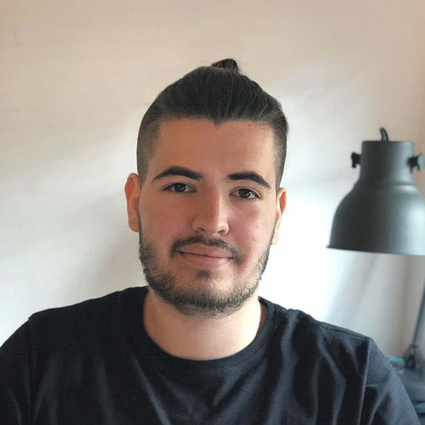

Datos personales

Artur Alcoverro Pastó
21/12/1998
Barcelona
artur.bcn1998@gmail.com
Formación acadèmica
-
Batxillerat tecnològic: Col·legi Sta. Caterina de Siena - Dominiques d'Horta
-
CFGS en Desenvolupament d’Aplicacions Multiplataforma: Centre d'Estudis Politècnics
-
CFGS en Desenvolupament d’Aplicacions Web: Centre d'Estudis Politècnics
-
Grau en Tècniques d’Aplicacions de Software La Salle Universitat Ramon Llull (Actualment estudiant)
Experience
-
2 years as junior developer: Telematel
Skills
-
Programming language: C, C#, Java, Bash, JavaScript, PHP, Progress ABL, C++ (Arduino).
-
Frameworks: Laravel, Android Studio, Arduino.
-
Web libraries: Bootstrap, Jquery, Datatables.
-
Databases: SQL, MongoDB.
-
Other Languages: JSON, XML, HTML, CSS, SASS, XSLT.